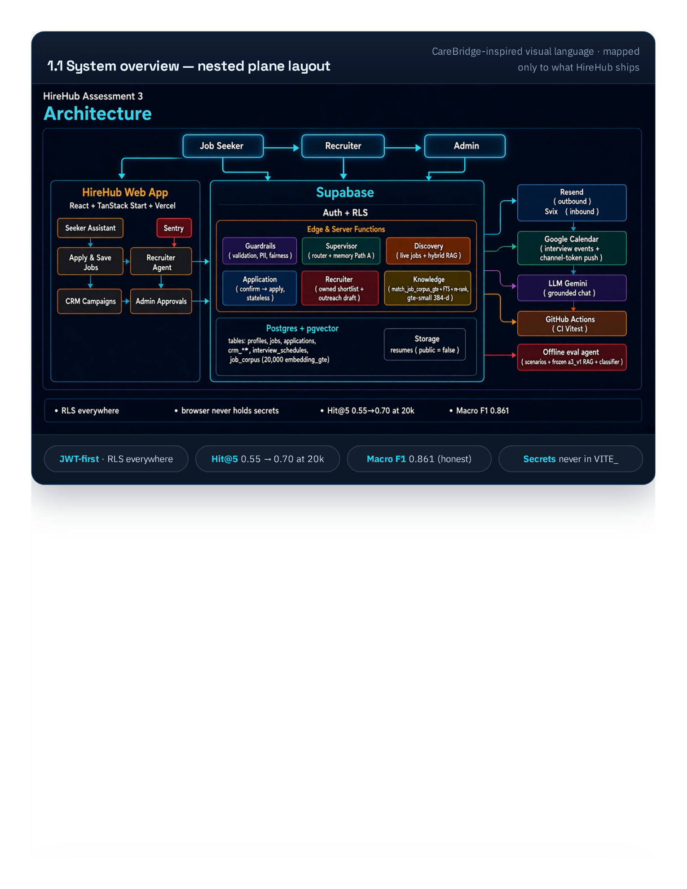
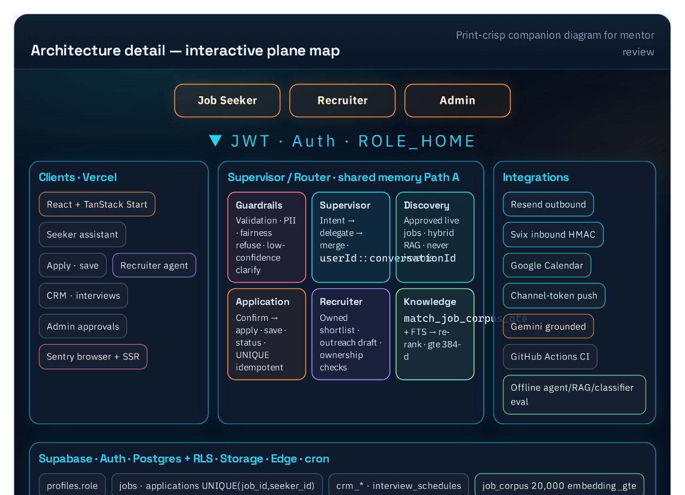
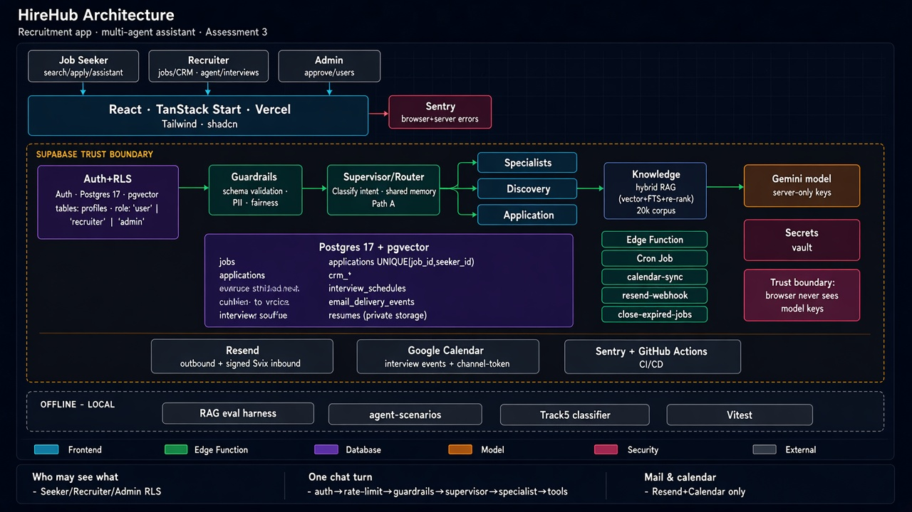
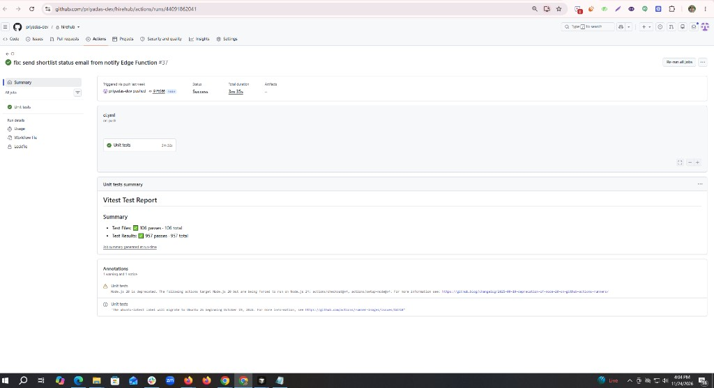
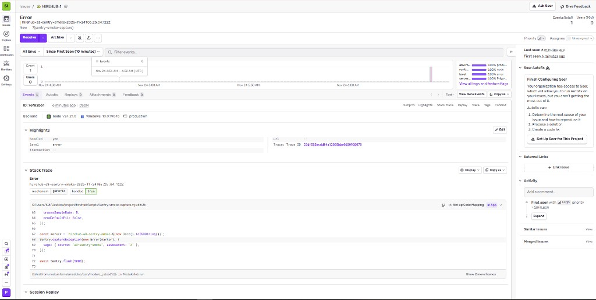
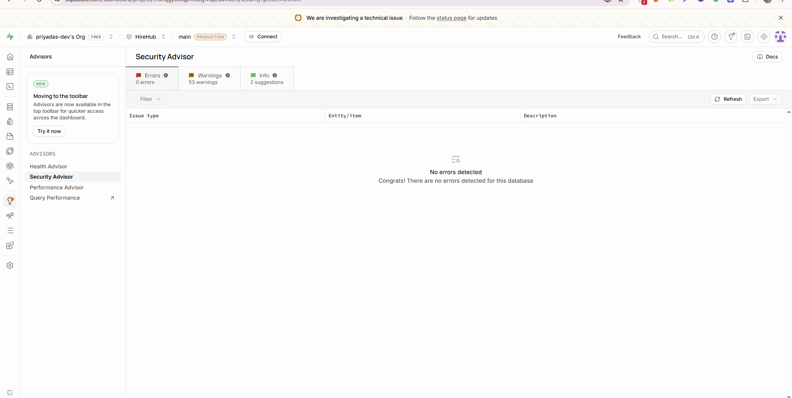
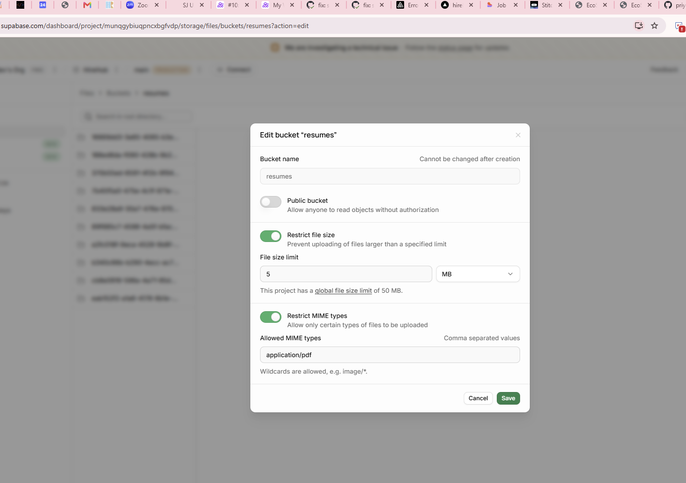
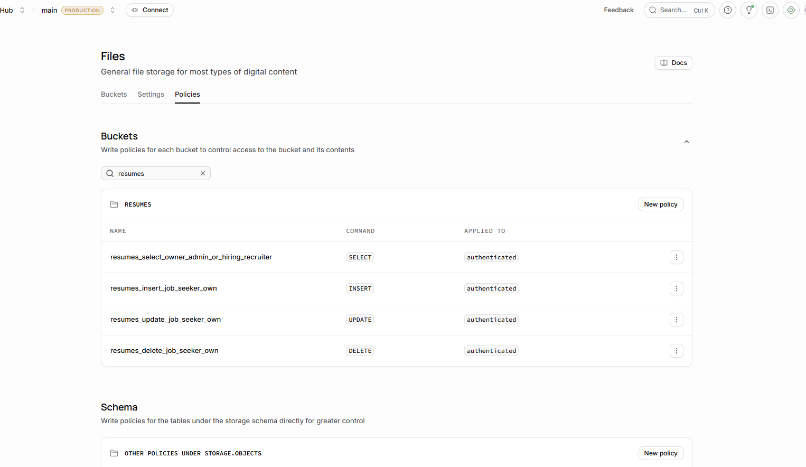

Integrated, secure, production-grade AI Job & Recruitment Portal — third-party services, supervised multi-agent stack, measured RAG/agent eval, and production engineering.
HireHub is a multi-role job and recruitment portal (Job Seeker / Recruiter / Admin) with AI assistants. Assessment 3 delivers an integrated system (real third-party services + recruiter CRM), an intelligent supervised multi-agent stack with guardrails, a measured agent/RAG evaluation harness (hybrid + re-rank, metrics vs A2), and a production-grade surface (CI, Sentry, resume RLS, rate-limits, idempotent apply, fairness).
All CRM contacts, synthetic job corpus rows, and classifier training text used for offline evaluation are synthetic or public-benchmark data. Live applications, resumes, and recruiter-owned jobs remain behind Supabase Auth + Row Level Security.
| Link | URL |
|---|---|
| Live app | https://hirehub-dev.vercel.app/ |
| Demo video | Google Drive folder |
| GitHub | https://github.com/priyadas-dev/hirehub |
| Release tag | assessment-3 (GitHub Release published) |
| Supabase project | munqgybiuqpncxbgfvdp |
| CI (green) | Actions run 44091862041 · Vitest 106 files / 957 tests |
| Architecture | Section 1 · nested plane + plane map + docs/architecture.jpg |
| # | Item | Where |
|---|---|---|
| 1 | Live URL + GitHub with assessment-3 tag | Table above |
| 2 | Architecture diagram | Section 1 |
| 3 | Evaluation report vs Assessment 2 | Section 5 |
| 4 | Model metrics (precision / recall / F1) | Section 6 |
| 5 | Security evidence (idempotent apply + resume ACL) | Sections 1.3, 4, 7 |
| 6 | CI link, observability, demo & credentials | Sections 7–8 |
| 7 | Mentor closeout evidence | Section 7.1 — delivered |
HireHub is a JWT-first, RLS-everywhere recruitment platform. The browser never holds provider secrets and never calls models directly. Every AI write path goes through guardrails, a supervisor, confirmation gates, and the signed-in user’s JWT so Postgres RLS and Storage policies remain the security boundary.
CareBridge-inspired visual language · mapped only to what HireHub ships


Shared memory Path A is in-process (redacted turns / skills / preferences / recent cards) keyed by userId::conversationId. Path B (agent_sessions) is live applied with RLS + FORCE RLS. Browser never holds provider secrets; every AI write uses the caller JWT.

docs/architecture.jpg (from architecture.mmd)requireSupabaseAuth; role from profiles.role only.match_job_corpus_gte + FTS) → RRF / lexical re-rank → Gemini when needed.| Cap | Assessment 2 | Assessment 3 |
|---|---|---|
| Assistant | Single job-search agent | Supervisor → Discovery / Application / Recruiter + guardrails + memory |
| Automations | Skill-match notify + status notify + job auto-close | Same + Resend status/campaign path + Calendar interview sync |
| RAG | ≥5k gte + hybrid FTS + re-rank; category-hit ~72.5% | Frozen a3_v1 IR metrics; corpus 20,000; Hit@5 0.55 → 0.70 |
| Classifier | NB baseline with skills-line features cleaned | Macro F1 0.861 on honest synthetic; dual OOD report |
| Integrations | Resend contact/account only | Resend status + CRM campaigns + Svix webhook; Google Calendar |
| CRM | — | Segments · campaigns · tracking under /recruiter/crm |
| Prod eng | Manual tests | GitHub Actions CI · Sentry · AI rate-limit/cache · resume RLS |
Requirement: ≥2 real free-tier services; one outbound action; one inbound webhook with signature verification.
| Service | Direction | Role |
|---|---|---|
| Resend | Outbound | Application-status email + CRM campaign mail |
| Resend (Svix) | Inbound webhook | Delivery events; HMAC verify; replay-safe |
| Google Calendar | Outbound + inbound push | Interview events; events.watch → channel-token verified webhook |
After a successful in-app notify-application-status, HireHub additionally sends Resend mail when configured (deliver-application-integrations). Provider issues are non-blocking and never break the notify UX. Outbound idempotency keys prevent duplicate sends for the same status transition.
Edge Function supabase/functions/resend-webhook rejects unsigned signatures (401), uses timing-safe Svix verification, handles events idempotently, and correlates to email_delivery_events.
Creates/updates interview calendar events; inbound events.watch push with channel-token verification; RSVP poller fallback; watch renew via live google_calendar_watch_channels. Secrets stay server/host only — never VITE_.
Recruiter CRM at /recruiter/crm. HireHub is system of record for contacts, segments, and campaigns.
| Capability | Implementation |
|---|---|
| Contacts | Create / search / import; UNIQUE (recruiter_id, email_normalized) |
| Segments | new / active / placed |
| Campaign builder | Draft → preview audience → confirm send |
| Outreach | Resend campaign mail with idempotency keys |
| Tracking | sent / opened / delivered / bounced via webhook |
| Ownership | Denormalized recruiter_id RLS; composite FKs applied live |
| Agent | Responsibility | Outcomes |
|---|---|---|
| Supervisor | Guardrails; route; memory; merge | runSupervisor |
| Discovery | Approved live jobs; never invent | Hybrid RAG; clarify/refuse |
| Application | Confirm gate writes | Propose → confirm → applyToJob |
| Recruiter | Owned shortlist + outreach draft | Ownership-checked tools |
UIs: /seeker/assistant · /recruiter/agent. Guardrails: validation, PII redaction, fairness refuse, low-confidence clarify, structured outputs + confirm chips. Idempotent applications, private resume storage, fairness matching, and confirm-to-apply (0 inserts without confirm) are covered by unit + browser evidence.
| Metric | Value |
|---|---|
| Agent scenarios | 18 / 18 (100% task-success) |
| Corpus @ A3 | 20,000 rows + embeddings (384-d) |
| Hit@5 (5k → 20k) | 0.55 → 0.70 |
| Precision@5 | 0.55 → 0.70 |
| Category-hit@5 | 0.625 → 0.750 |
Multinomial NB job-category classifier uses cleaned skills-line features, then enrichment + diversification to v2-div-b.
| Metric | Value | Target |
|---|---|---|
| Accuracy | 0.864 | preferred (70%, 90%) |
| Macro F1 | 0.861 | ≥ 0.85 — met |
| Weighted F1 | 0.860 | — |
Independent OOD reported separately (never blended): Acc 0.247 / Macro F1 0.218.
| # | Requirement | Status | Evidence |
|---|---|---|---|
| 1 | Green Actions + assessment-3 Release | Delivered | Actions · Release |
| 2 | Sentry DSN + live observability event | Delivered | Marker hirehub-a3-sentry-smoke-2026-11-24T06:25:04.122Z |
| 3 | Security Advisor + resume screenshots | Delivered | Advisor clear · private resumes · policies |
| 4 | Live other-recruiter deny + upload checks | Delivered | pass: true · PDF ≤5 MB |
| 5 | Migrations agent_sessions / 0022 / 0028 | Delivered | All APPLIED live |
| 6 | Agent apply E2E in demo | Delivered | Demo video (Drive / DCT) |
Workflow .github/workflows/ci.yml · green run 44091862041 · Vitest 106 files / 957 tests · Release assessment-3.

Sentry via src/lib/observability/sentry.ts; DSN on local + Vercel Production; live event captured.

| Check | Result |
|---|---|
| Resumes private + PDF/5MB | PASS (live) |
| Other recruiter denied | PASS (live) |
| Security Advisor | PASS — Advisor clear |
| Idempotent apply UNIQUE | PASS |
| Secrets not in VITE_ | PASS |



| Migration | Status |
|---|---|
agent_sessions (Path B) | APPLIED — RLS + FORCE RLS |
| CRM ownership FKs (0022) | APPLIED |
google_calendar_watch_channels (0028) | APPLIED |
| Item | Detail |
|---|---|
| Live app | https://hirehub-dev.vercel.app/ |
| Demo video | Drive folder — Confirm apply journey |
| Credentials | Shared via Dev Control Tower / DM only |
Emails and passwords are not published in this report.
npm test npm run rag:eval:agents npm run rag:eval:frozen -- --provider=gte --k=5 --scale-label=20k npm run rag:classify:track5-p5 npm run rag:classify:track5-ood npx vitest run src/test/apply-to-job-concurrency.test.ts src/test/resume-access-rls.test.ts src/test/integrations-phase4.test.ts npm run a3:sentry-smoke npm run a3:resume-deny npm run a3:migration-status
Golden rule: depth over breadth — one real outbound + one verified inbound, one solid multi-agent flow with fairness and confirm-to-apply, honest RAG at 20k (Hit@5 0.55 → 0.70), Macro F1 0.861, and a secure no-duplicate application + private resume path.